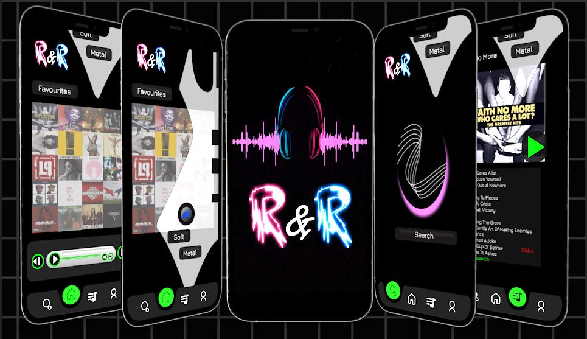
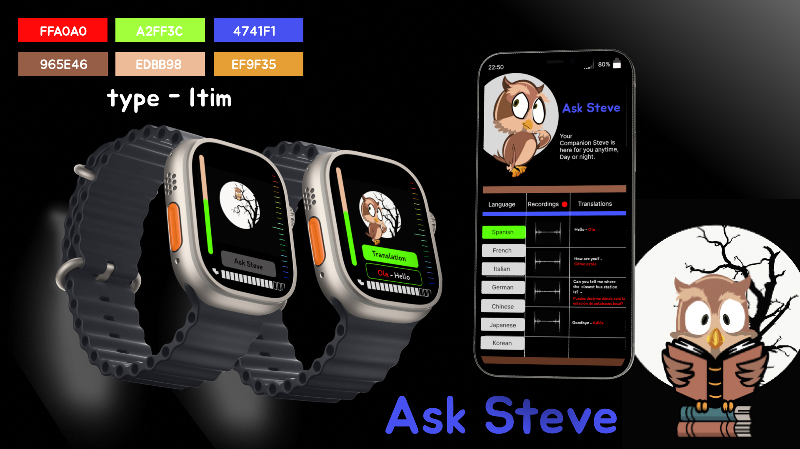
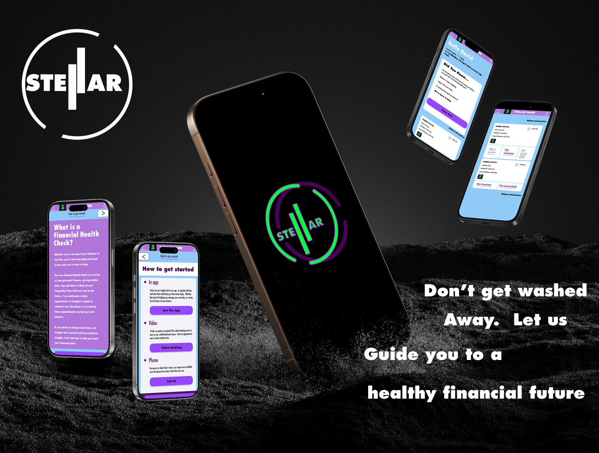

I’m an illustrator & motion graphic designer studying digital design. My goal is to combine the skills I’ve attained with the new skills I’m learning in university. Designing user interfaces in todays modern era that not only engage but also connect with the user on an emotional level to bring the best user experience possible.
Music App Design
This design project focused on developing a mobile music application. The real goal for me was to create an engaging user friendly interface that allows users to easily discover, play and organise their music enhancing their overall listening experience based on my favourite genre - Rock. The project aimed to balance an aesthetic appeal based on that particular theme emphasising smooth navigation.
The real problem with this project was to create something that is keeping up with modern trends in UI while leaning to a rock & roll theme. To manage this problem I researched into a lot of Grunge/ Pop Rock imagery and tried to find a nice balance of appropriate graphics and fonts that didn’t give the dark vibe that unfortunately comes hand in hand with this type of music. The target audience in this case was very easy, I knew it was an application themed around my preferred style of music so I approached this design process on something I would like to use.
My role was to create this application from sketches on layouts, creating low fi to hi fidelity wireframes right through to component, graphic creation, fonts and colour choice to create the best flow possible. Most modern UI’s in music apps are very similar but I feel I achieved an original concept while keeping up with the trends. The real constraints with this project was the time frame. With More time I feel this design could have been improved but considering it was a 6 week project I was happy with the outcome. My process was very simple, research modern applications, sketch possible graphics and elements Id like. then in Figma I test different layouts to see which worked best, trial and error. With this project I learned the value of creating wireframes. I always jumped straight into the final design and went with it; but learning and conceptualising the ideas first proved to be very benificial with the time constraints
Ask Steve
This design project focused on developing a Smartwatch application. The main goal for me was to try and utilise my Illustration skills to create a fun user friendly Interface that could be used as a translation device with a companion application that records your words and phrases to help you learn the chosen language.
There was a few problems with this project I had to overcome. The first was the time frame, we had three weeks to research, design and create a speculative application. Another was obviously the restraints of designing a UI within such a small space. Having the ability to create vector based graphics really benefited me in this, scaling without distortion. My role was to create this application from sketches on layouts, creating components, graphic creation, fonts and colour choice to create the best flow possible. Most modern UI’s in Smartwatch apps are very similar in the sense they are focused on health and well being. I took this as an opportunity to create something a little different. From previous projects I learned a great way to make an emotional or nostalgic connection with a wide audience is to create a character people will remember. Essentially this entire concept was based on the Smartphone app Dualingo. With their character, they chose a bird and I did wrestle with a few different characters but I ultimately ended on settling for an owl. This decision came from my love of a Disney character from my childhood that I still love. Archimedes - the highly educated owl.
"I love the graphic medium in all it's forms. My passion is with animation and illustration but making User Interfaces better and easier with these skills is where the magic happens"
-David Gamble
Brand Identity/Banking Prototype
Most definitely my biggest and most in depth design project of my first year studying Digital Design. The assignment was to create a working prototype of an online banking application aimed at 16 - 18 year olds. Accompanied with promotional material and a landing page. This covered us going into great detail of brand identity, colour psychology, Logos, nametags and even developing our own brand guidelines.
There was a whole host of issues with this project. As a mature student I was reluctant in carrying out the research with the target age group. Thankfully though I was able to gather enough information from a few students in my class I had gotten friendly with. Then there was the design of the logo of my brand itself, I wanted to create something that embodied the impression of being part of something bigger than ourselves. I was confident that my brand name was perfect for this - Stellar, but when it came to the design of the logo I honestly hit a brick wall. I tried multiple variations of stars and even dabbled in star signs and pop culture nostalgia but everything I came up with looked bland and generic. This did have a knock on effect with the project and I felt I was starting to fall behind with the other elements required for the module. In the end My lecturer simply took my latest attempt and made a few simple changes and just like that I had my design. From then on almost everything else seemed to fall into place and with a few extra hours I was able to catch up and complete it on time.
My role in creating this application was covering everything from research, deciding my font & colour choice right through to the layout and design of the prototype. Again through trial and error and looking into bank brand UI’s I sketched out concepts on layouts, creating low fi to hi fidelity wireframes. One of the main things I learned from this project was understanding how brands are developed to create an emotional or nostalgic connection with people. I find myself looking all around me now and getting why designers created their brands in the way they did. This was a great project and I feel I got a lot of valuable knowledge, not just about branding but design in general. Technically this pushed me to create and understand flows within UI’s for better user experiences and I even learned through a few tutorial how to create interactive component sets and image sliders. I levelled up with Figma for sure.